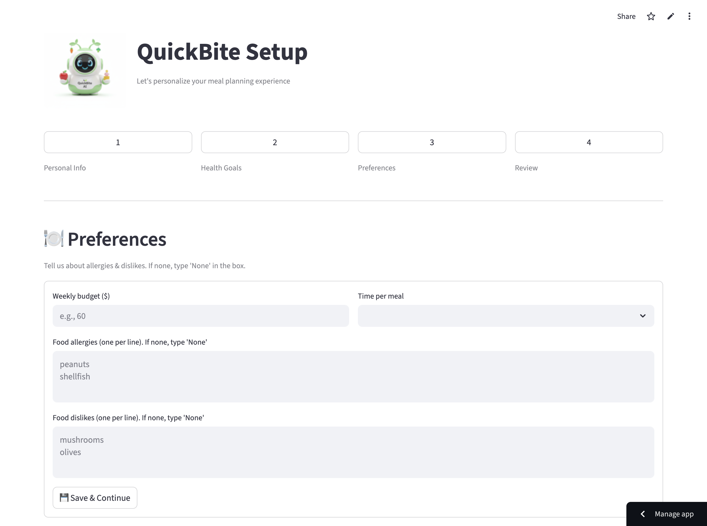

QuickBite — AI meal planning from what you already have
QuickBite is an AI-powered meal planning assistant designed to eliminate the daily friction of cooking. Built from the ground up using Python, Streamlit, and Anthropic’s Claude AI, it acts as a smart kitchen companion. Rather than asking users to shop for new recipes, QuickBite generates customized, time-saving menus based strictly on the ingredients users already have in their fridge, while actively tracking their daily macronutrients.

The problem statement
Busy individuals face significant time and energy constraints that prevent them from consistently planning, purchasing, and preparing healthy meals. Through initial problem discovery, I identified four critical pain points that lead to inadequate nutrition and frustration:
Project goals
Reverse the cooking process
Generate recipes based on existing inventory rather than requiring users to buy new ingredients.
Data-driven nutrition
Create a clear, visual dashboard that tracks actual macronutrient consumption.
Seamless UX
Integrate an AI chat interface and a data dashboard without overwhelming the user.
The design process
Phase 1: Concepting & AI prompt engineering
I began by mapping out the core user flow and establishing the bot's identity. I set up a GitHub repository and linked it to the Google AI Studio API.
The solution: I shifted focus to prompt engineering as a UX tool. By writing clear identity.txt guidelines and system instructions, I constrained the bot's behavior for natural, forward-moving interaction.


Phase 2: Information architecture & modularization
As features grew, the app became complex. IA had to work in code and in the UI.
The decision: I split the codebase into smaller, feature-specific files. In the UI, this became a tab-based navigation system separating Fridge Inventory, Shopping List, and Meals Library.
The result: A highly organized interface where users could onboard quickly without feeling overwhelmed.

Phase 3: User testing & UX iteration
During beta testing and stakeholder pitches, feedback changed the UI layout.
Iteration: I pivoted to a user-driven model: input fields to log what users actually consumed, updating the visual history with calorie, protein, carb, and fat data.
Iteration: I restructured the layout so Chat and the Data Dashboard sit side-by-side—talk to the AI while watching nutritional charts update.

Accordion — Build notes (expand)
Accordion — Data & USDA integration
Key solutions & final design
Demo clip (replace with your exported GIF/video)
Best-effort: add a short looping .mp4 or .webm at assets/img/QuickBite/quickbite-demo-placeholder.mp4 (user types "I have chicken and rice" → recipe + macro charts update). Browsers without the file will show the poster only.
Visual history log: Charts use USDA FoodData Central data to show a readable nutritional breakdown from what users log—not hypothetical numbers.
Illustrative bar layout only (no fabricated metrics):
Visual demonstration
High-fidelity screens (desktop grid; horizontal swipe on narrow viewports).


What AI taught me about design
Building QuickBite shifted my perspective on product design and technology.
- AI extends human creativity: Claude and Gemini helped with structured JSON and debugging so I could focus on UX.
- Iteration > perfection: Small bugs—like syncing stats with inventory—showed that impact comes from steady, localized improvements.
- Team of one: I combined UX/UI with front-end and back-end logic to ship a functional prototype.
“Prompt engineering became a UX discipline: clear system instructions are as important as clear UI copy.” — QuickBite build takeaway
Summary & impact
Goals achieved: I designed, built, and shipped a functional, data-driven web app. Resolving layout issues and prioritizing user-driven input removed much of the mental fatigue from daily meal prep.
Vision: QuickBite shows how technology can turn cooking into a more effortless, health-driven experience.
Next steps
- Rebuild the front end with a custom UI via Figma Make.
- Integrate OCR receipt scanning to auto-update the digital fridge from a grocery photo.
- Add social recipe sharing for community engagement.